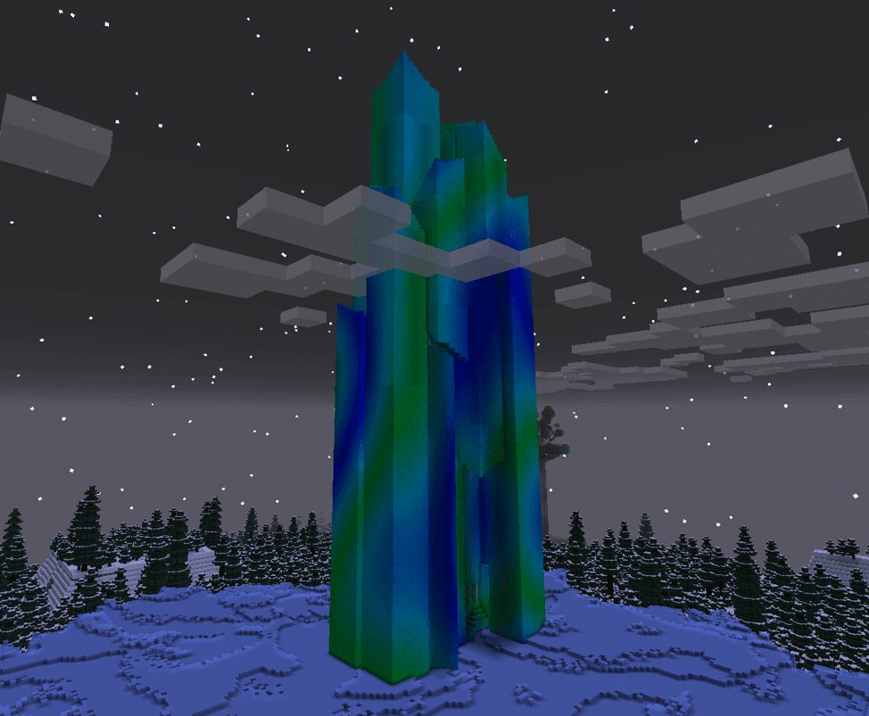

STAGE 8：スノークイーン Snow Queen
オーロラ色に光る宮殿の女王様。現行版の実質ラスボス。

場所 氷河「オーロラ宮殿」最上階HP 200危険度 ★★★★☆解放 高原の一部
宮殿の歩き方
写真のとおり、塔そのものがオーロラ色に発光していて遠くからでも見つけられる。内部は氷ブロックだらけで滑る。雪のモブが落とすアークティックファーが防具素材。チェストには変わった食料「実験体115」（置いて食べられて、時間が経つと復活する不思議なケーキ的なもの）が入っていることもある。最上階がボス戦。
倒し方
- 序盤は氷の棘の上から雪玉と氷塊落とし。弓で応戦しながら様子を見る
- HPが減ると地上に降りてきて、周囲に氷の棘を生やしながら接近してくる。ここからが本番
- 床が滑るので、走り回るより位置取りを丁寧に。剣と弓の併用が安定
弓と剣の両方、食料。床が滑るのでダッシュの多用は禁物
🎁 戦利品：トライボウ（矢を3本同時発射）やシークボウ（自動で敵を追う矢）、氷の剣など氷テーマの武器類、トロフィー
宮殿の外観そのものが最大の目印。夜の雪原ではかなり遠くからでも光って見える。